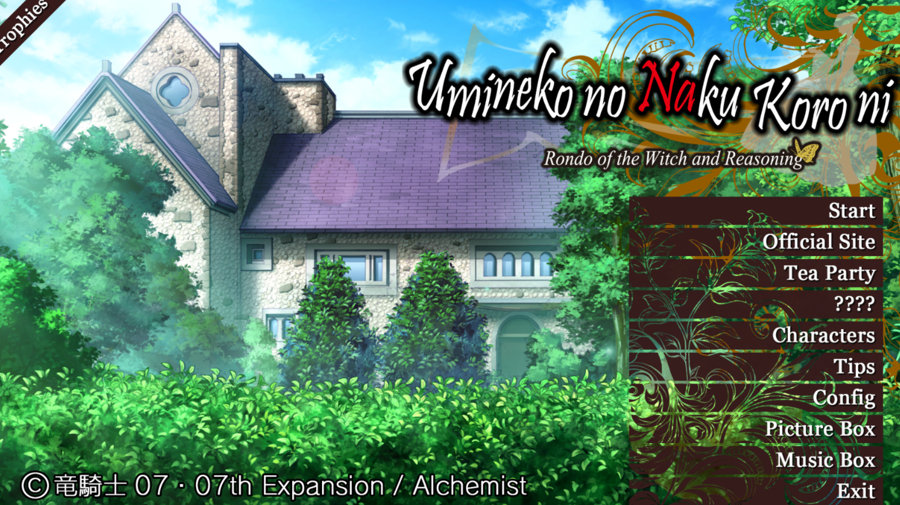

I have a dual-GPU, Intel HD Graphics 4600 and Nvidia GeForce GTX 850M. Umineko uses the Intel GPU by default but I can force it to use Nvidia and the same problem happens. My screen res is 1920x1080 and the game was running at 1440x810. I tried lowering the resolution to 1280x720 and it didn't crash. In case it's relevant I've never had the black rectangles/missing textures mentioned on the Known Issues page.
Higher resolutions (haven't tried these before) cause a new problem in which the game is forced into fullscreen but the game is too big to fit.
I've attached screenshots of the menu at 1600x900 (note the top left corner) and 1920x1080 (spoilered because large files).
- [+] Spoiler
- 
- 1600900window.png (3.04 MiB) Viewed 11499 times

- 19201080window.png (4.39 MiB) Viewed 11499 times
Edit: I just tried running it actually set to fullscreen with the higher resolutions. The game screen still doesn't fit but it's lined up on the upper left instead of the center (so Trophies is visible but the menu is even more cut off). I was going to try running the credits but the Tea Party option is now completely offscreen.